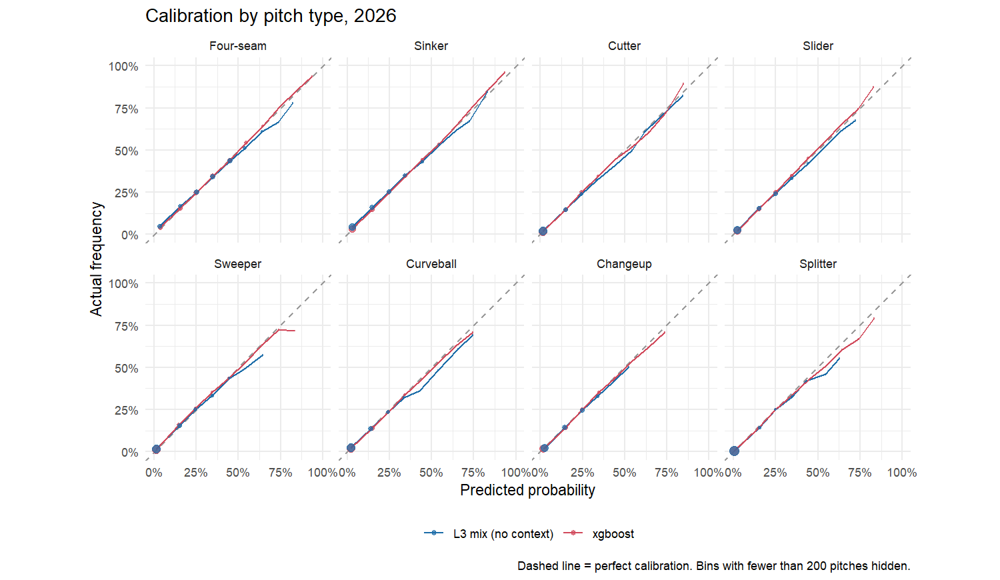
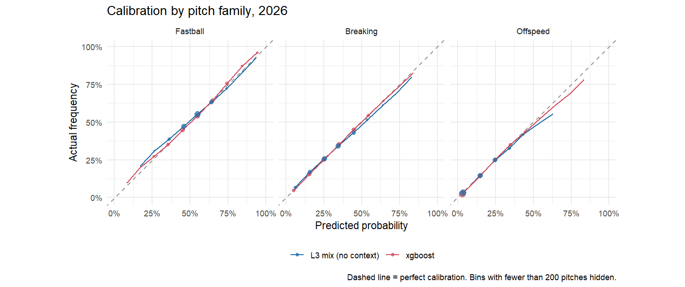
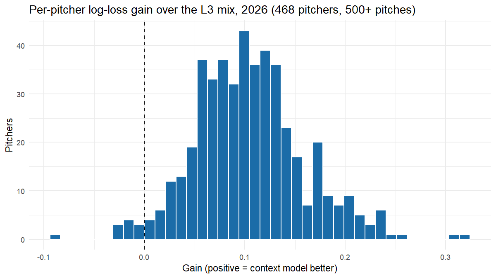

Results on 2026
All numbers on this page come from the 2026 regular season, scored once with settings fixed on 2025. The full tables are in test_results.md.
Headline
| Model | Log loss | Top-1 | Family log loss | Family top-1 |
|---|---|---|---|---|
| Prior mix (baseline) | 1.580 | 37.2% | 0.916 | 56.2% |
| + current form | 1.417 | 39.0% | 0.888 | 56.7% |
| + platoon tilt | 1.390 | 40.1% | 0.873 | 56.8% |
| Logistic, 8 pitches | 1.327 | 43.3% | 0.833 | 58.4% |
| Logistic, family then pitch | 1.349 | 42.4% | 0.831 | 58.5% |
| Logistic + batter layer | 1.324 | 43.6% | 0.830 | 58.7% |
| xgboost | 1.283 | 44.7% | 0.809 | 59.7% |
What each piece adds
| Step | Log-loss gain | 95% interval |
|---|---|---|
| Knowing the pitcher better (prior mix → current form + platoon) | 0.190 | 0.186 to 0.194 |
| The situation, logistic | 0.064 | 0.062 to 0.065 |
| Batter layer | 0.003 | 0.003 to 0.004 |
| Trees over logistic | 0.041 | 0.039 to 0.042 |
Most of the gain comes from knowing the pitcher’s current mix. The situation adds a clear, real gain on top of that strong baseline. The batter layer is real but small: who’s pitching and the count matter far more than who’s hitting.
Calibration


The average gap between predicted and actual frequency is 0.4 percentage points or less for every pitch type. The pitcher’s mix alone (blue) is overconfident at high probabilities; the model (red) fixes that.
Per pitcher

Of the 468 pitchers with 500+ pitches in 2026, the model beats the baseline for all of them and beats the best mix for 98%.
- Biggest gains: Ryan Rolison, Yusei Kikuchi and Shane Baz, all deep repertoires where count and sequence matter a lot.
- Where it doesn’t help: John King, Josh Hader and Pete Fairbanks, mostly two-pitch relievers whose mix already says nearly everything. The model loses a little by applying league-wide count habits that don’t fit them.
By count
| Count | Mix only | Model | Gain |
|---|---|---|---|
| 3-0 | 1.165 | 0.648 | 0.517 |
| 3-1 | 1.289 | 1.070 | 0.219 |
| 0-2 | 1.414 | 1.250 | 0.164 |
| 2-0 | 1.332 | 1.171 | 0.161 |
| 1-2 | 1.429 | 1.308 | 0.120 |
| 0-1 | 1.437 | 1.334 | 0.103 |
| 1-0 | 1.364 | 1.269 | 0.094 |
| 1-1 | 1.423 | 1.330 | 0.093 |
| 0-0 | 1.388 | 1.299 | 0.089 |
| 2-1 | 1.357 | 1.274 | 0.083 |
| 3-2 | 1.301 | 1.220 | 0.082 |
| 2-2 | 1.406 | 1.335 | 0.071 |
An idea that didn’t hold up
On 2025, a family-first model (predict fastball / breaking / offspeed, then the pitch from his mix) looked better for pitchers whose pitch labels had changed. I wrote “use it for relabeled pitchers” into the test plan before scoring 2026. On 2026 it was worse for those pitchers (1.275 vs. 1.253 log loss, interval +0.012 to +0.032), so it was dropped. The 2025 edge came from about 2,000 pitches. The family view stays in the report because it’s what a hitter prepares for.
Limitations
- Pitch type only, not location.
- Public data only: no catcher targets, game plans or scouting reports.
- Pitch labels come from Savant’s classifier, and relabels are only partly repaired.
- xgboost’s interactions aren’t directly readable. The logistic model is the one to explain; the trees show interactions add about as much again.